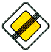

знак 2.2
Приложение 1 (дорожные знаки)
Закон Грузии «О дорожном движении» № 1830-რს, консолидированная редакция 25.06.2026 (Matsne, публикация 36). Юридическую силу имеет грузинский текст, русский — перевод. Источник: Matsne (рус.), Matsne (груз.).

Текст (рус., дословно)
2.2. «Конец главной дороги» – конец участка дороги, откуда она утрачивает статус главной дороги. Если главная дорога заканчивается перед пересечением с дорогой, на которой установлено право преимущественного проезда на данном перекрестке, знак 2.2 устанавливается вне населенного пункта предварительно вместе со знаком 2.4, а в населенном пункте – на расстоянии 25 метров от перекрестка или (и) вместе со знаком 2.3 или 2.4. Знак может быть установлен и на другом расстоянии, указанном на табличке 8.1.1.
Официальный текст (груз.)
2.2. „მთავარი გზის დასასრული“ − გზის იმ მონაკვეთის ბოლო, საიდანაც იგი კარგავს მთავარი გზის სტატუსს. თუ მთავარი გზა იმ გზის გადაკვეთის წინ მთავრდება, რომელზედაც დაწესებულია მოცემული გზაჯვარედინის გავლის უპირატესობა, 2.2 ნიშანს დაუსახლებელ პუნქტში დგამენ წინასწარ 2.4 ნიშანთან ერთად, დასახლებულ პუნქტში − გზაჯვარედინიდან 25 მეტრ მანძილზე ან/და 2.3 ან 2.4 ნიშანთან ერთად. ნიშანი შეიძლება დაიდგას სხვა, 8.1.1 დაფაზე მითითებულ მანძილზედაც.
Где это в курсе
Билеты, которые на неё ссылаются (2)
По ссылкам на закон в пояснениях базы (с учётом наших уточнений онтологии).
Постоянная ссылка: norm/sign-2.2.html